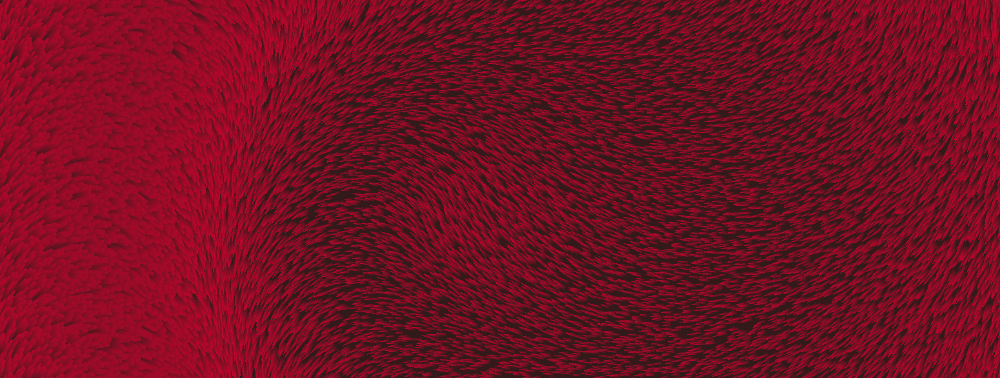
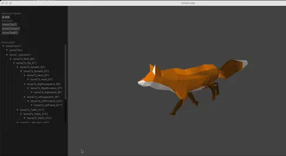
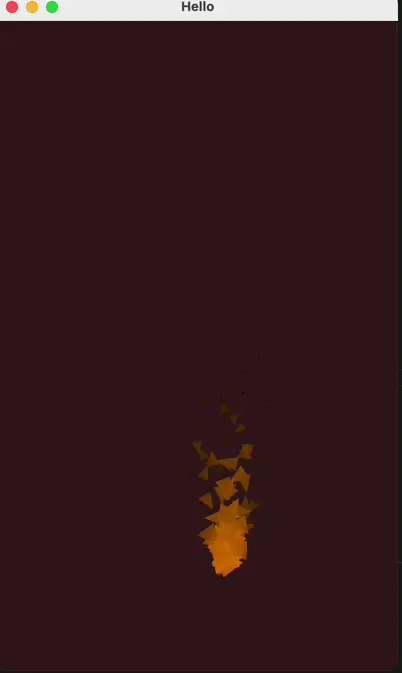
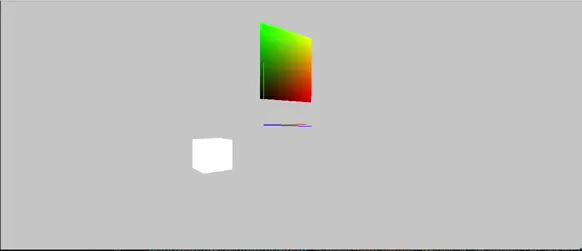
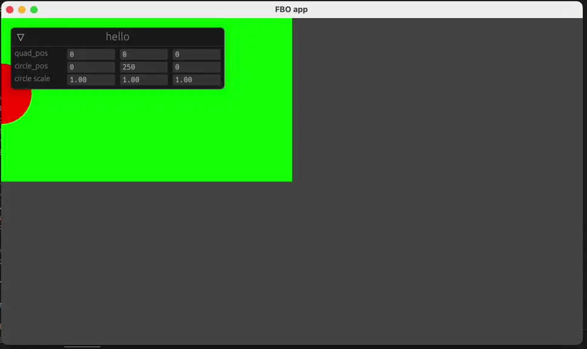

OpenGL and Rust

After working multiple years with creative coding frameworks like Processing, Cinder, OpenFrameworks and Three.js I felt that I needed to do a deep dive into graphics programming and really understand the mechanics under the hood of how those frameworks operate.
My main source of material was learnopengl.com. I went trought it with different languages (C, Go, Rust) and it was a great way to solidify the basics of OpenGL but at the end I decided to focus only on Rust, mainly because it has a pretty good build system and nice graphics libraries like glow, glam and later wgpu.rs
Currently I’m making a second version of this library but using wgpu but here’s a couple of screenshots of some of the demos I was able to pull off:
GLTF loading & Animation playback
 Implementing a GLTF loader and the skinned mesh animation into my library was a great learning experience and helped me greatly on the Google Pixel Arena. Having a deeper understanding of the file format helped me architect the asset pipeline for that project.
Instances

I really loved making this demo, each “fur” strand is just an triangle with a top color and a bottom color, with instancing we are able to draw milliions of tris. The final app is really mesmerizing
Particle System

3d Orbit camera

The orbit camera works with two transforms, one that is the camera final position and another parent that the mouse controls the scale and rotation.
Frame Buffer Objects

Really basic demo, just renders a circle offscreen and uses that texture to render a quad.